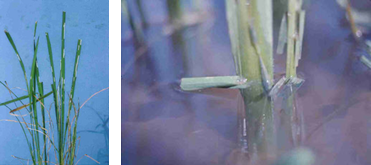
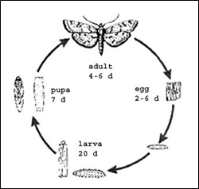
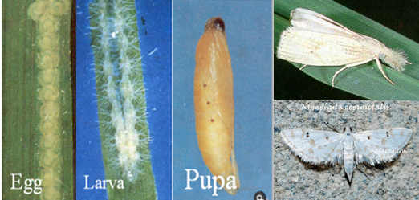

PESTS OF RICE (BORERS AND FOLIAGE FEEDERS) :: Major Pests :: Rice Case Worm
5. Rice case worm: Nymphula depunctalis (Pyraustidae: Lepidopera)
Distribution and Status: India, South East Asia, Australia Damage symtoms: The caterpillars feed on green tissues of the leaves and form tubular cases around them by cutting the apical portion of leaves, which float on water. Several tubes are also seen hanging from the plants. In case of severe infestation plants are unable to grow. They damage leaf tips. The apical portion of cut leaves bear whitish papery areas since the chlorophyll is scrapped. |

|
Floating leaf cases (IRRI) |
|  | Bionomics: Adult is a delicate white moth with pale brown wavy markings. Eggs are laid on leaves. Egg period is 2-6 days. Larva is pale translucent green with orange head. Larva constructs a case. Larval period is 14-20 days. Larva has filamentous gills on the sides of the body that helps to lead a semi aquatic life. It pupates in case it self for 4-7 days. The total life cycle occupies 19-37 days.  |
Management
- Conserve larval parasitoids viz., Elasmus sp., Apanteles sp., Bracon sp.,
- Conserve pupal parasitoids viz., Pediobius sp., Apsilops sp., Eupteromalus parnarae
- Drain water from the field
- Dislodge the cases by running a rope over the young crop
- Spray endosulfan 35 EC or monocrotophos 36 SL 1.0 L or phenthoate 50 EC 1.0 L in 500 L water/ha.